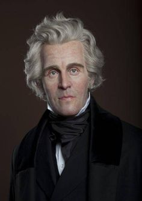
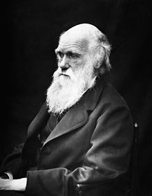
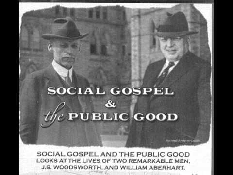

The Articles of Confederation vs The US Constitution
Even though written by some of the same people, the Articles of Confederation and the U.S. Constitution have many differences, some more important than others. For example, a basic difference was that these documents were ratified at different times, a more important difference is the US switching from a unicameral legislature to a bicameral legislature. The Articles of Confederation were ratified on March 1, 1781, while the US Constitution was ratified on June 21, 1788. For ratification, the consent of all states were needed for the Articles of Confederation, but for the US Constitution it needed the consent of only 9 states. The Articles of Confederation were succeed by the US Constitution. On the other hand, The Articles of Confederation had a unicameral legislature which they called Congress. With the US Constitution update came the bicameral legislature, which is the Congress divided into the house and the senate. Both of these Congresses had members. The Articles of Confederation had 2-7 members per state. On the contrary, the US Constitution had 2 senators per state, with the number of representatives being dependent on population of the state. It Is a good thing that there were many differences between the Articles of Confederation and the US Constitution, not only does it show it was a long thought out process, but it shows that these “differences” helped to produce the US Constitution, (A better version of the Articles of Confederation) what we lay our bedrock on today.
President Andrew Jackson Reconstrucion Plans vs Radical Republicans Reconstruction Plans
During the time of reconstruction president Johnson succeeded Lincoln after Lincoln was shot by John Wilkes Booth at Ford’s theatre. Johnson’s presidency caused conflict with the Republican dominated congress. Some differences in the Republican plan and Johnson’s plan for reconstruction included: Johnson's version of Reconstruction completely ignored the hopes, dreams, and aspirations of African-Americans, while the Republicans plan did the opposite. When Johnson became president, he reversed Special Field Orders No. 15 which included “forty acres and a mule.” The Black Codes serve as an example of how Johnson’s views violated the fundamental principles of free labor ideology. He agreed with the southern view, not allowing welfare for minorities, and he despised when freedman left their masters. Other differences included Johnson’s opposition to the Freedman Bureau Bill, and the Radical Republicans attempt to overturn Johnson's Civil Rights Act veto. It took two times for the Congress to pass the Civil Rights act of 1866, because Johnson vetoed it both times. The second veto was overridden by a 2/3 majority in each chamber. In fact, this veto was the first time in history that an important piece of legislation was overturned. Johnson tried to negate the south by stopping the Freedman’s Bureau, which helped former slaves in every aspect of life. Not only was he an awful president, but Johnson was a racist who favored segregation and always tried to fight congress over something that would benefit himself more than the majority.
Who were the Social Darwinists? What did they believe? What did they advocate?
Charles Darwin’s theories were applied to many aspects of life including sociology, politics, philosophy, and biology. His theories influenced individuals during this time who tried to develop eugenics movements that sought to improve human genetic stock. Social Darwinists were people who claimed that natural selection and survival of the fittest exists for humans, not just plants and animals. At this time many individuals would use the term “survival of the fittest” as a strongpoint in a social argument, insisting biology was destiny. Social Darwinists believed that the wealthy would get wealthier and the poor would get poorer. Herbert Spencer, among many of the Social Darwinists coined the term “survival of the fittest” and he believed that, “ all structures in the universe develop from a simple, undifferentiated, homogeneity to a complex, differentiated, heterogeneity, while being accompanied by a process of greater integration of the differentiated parts” (Spencer). Simply put he means that the lowest forms of life are said to be evolving into higher forms, such as the thinking man or human. Being a Social Darwinist, he tried to apply the theory of evolution to sociology. Spencer’s sociology could be described as Social Darwinism mixed with Lamarckism: when an organism can pass on to its offspring physical characteristics that the parent organism acquired through use or disuse during its lifetime.
Would you consider yourself a Darwinist?
Describe the Social Gospel Movement. Who were some of the leaders of this movement? How did the ideas of the Social Gospel Movement differ from Social Darwinism?
The Social Gospel Movement was a movement by protestants that applied Christian ruling and teaching to social problems including economic inequality, poverty, war, poor schooling, child labor, and crime. Some leaders of this movement included Washington Gladden , Charles Monroe Sheldon, and Josiah Strong. Most of these leaders were liberal and sought to put into practice the Lord’s Prayer in their daily life. The Lord’s prayer is from Matthew 6:10. The ideas of Social Darwinism and the Social Gospel Movement are different in many ways. For one, social Darwinism led to eugenics which sought to set aside certain people who were less powerful and wealthy so that the individual’s with the better so called “traits” could prosper, while Social Gospel Movement helped any individual and sought out to help/fix all issues in the world. One movement negated the poor while the other helped the poor. Another difference is that Social Darwinism comes from a man who doesn’t believe in God while the Gospel Movement comes from religious people. Even though, there are differences between the Social Gospel Movement and Social Darwinism it is good that both these movements happened. For one, not only does it widen your perspective on the world, but it allows the individual to think about what type of future they wish to see. Hopefully they act on that whether Darwinist or Protestant.
About Me

My name is Conor Kolmer, this is my blog covering United States History from 1865-present day. It will continue to grow as we go further into the months of April and May. If you enjoy the content feel free to follow me on twitter @kolmercm.
Fact of the day

Follow @kolmercm